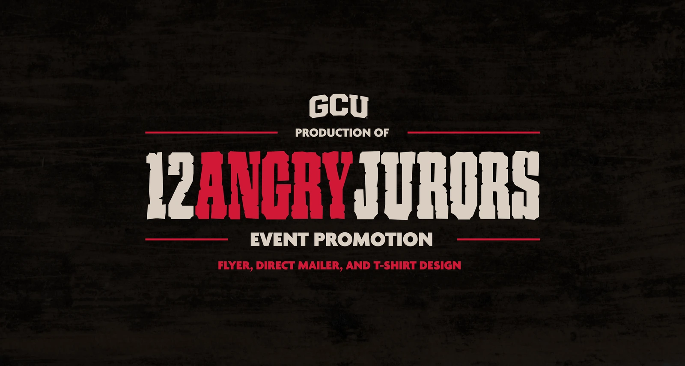
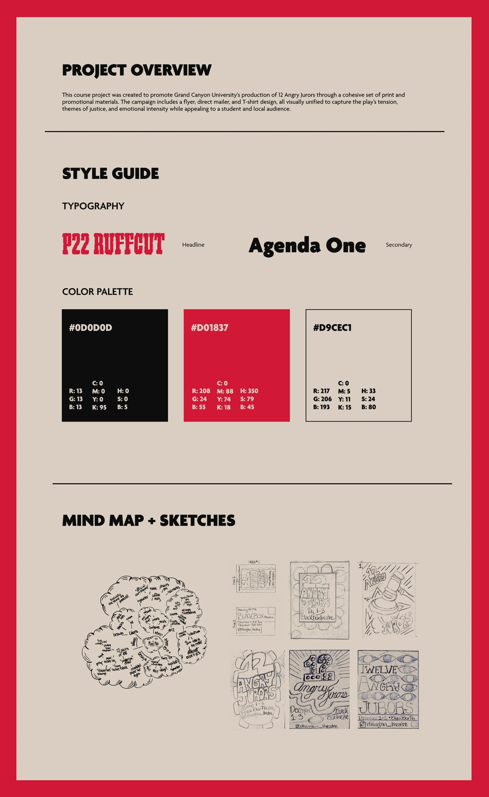
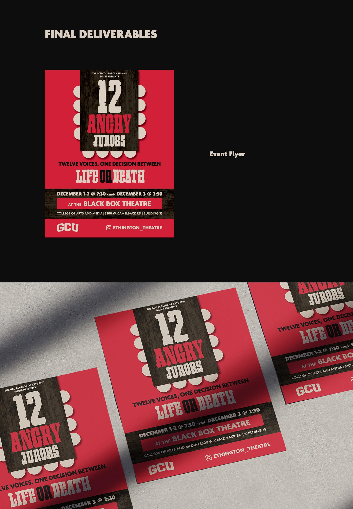
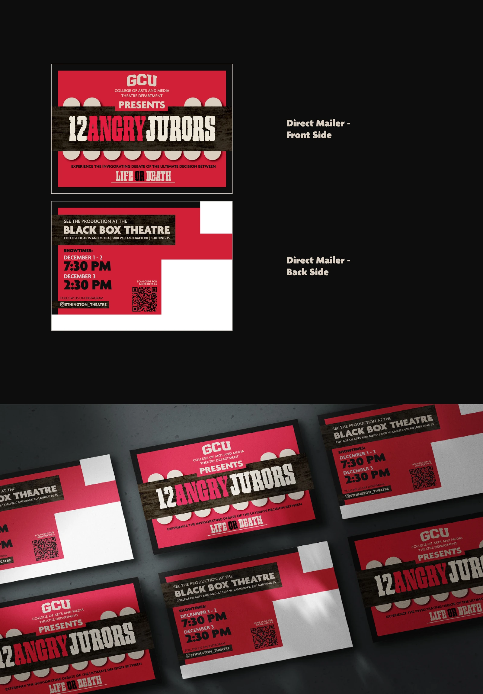
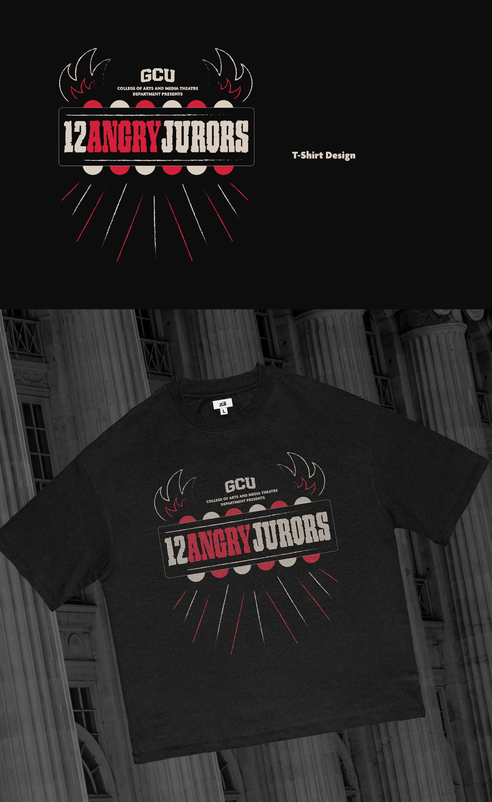

Read project overview
A course project promoting Grand Canyon University’s production of 12 Angry Jurors through a cohesive set of print and promotional materials. The flyer, direct mailer, and T-shirt design capture the play’s tension, themes of justice, and emotional intensity for a student and local audience.




